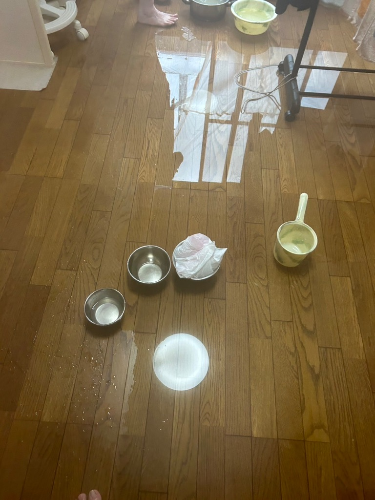

雨漏り応急処置｜自分でできる5つの方法とやってはいけないNG行動
公開日：2026年2月17日
突然の雨漏り！今すぐできる応急処置と、絶対にやってはいけないNG行動を現場のプロが解説します。

突然の雨漏り応急処置の様子
こんな状況で困っていませんか？
- 天井から突然ポタポタと水が垂れてきた
- 夜中や休日で業者に連絡できない
- 今すぐ何とかしたいけど、何をすればいいか分からない
雨漏りは突然起こります。特に台風や集中豪雨の夜、業者に連絡できない時間帯に発生すると本当に困りますよね。
この記事では、今すぐ自分でできる応急処置5つと、絶対にやってはいけないNG行動をプロの目線で解説します。
【重要】まず確認すべき3つのこと
応急処置を始める前に、必ず以下の3つを確認してください。安全第一です。
1 安全確認：漏電の危険性
雨漏りの水が電気配線やコンセントに触れている場合、感電の危険があります。
- 天井から垂れた水の下に電化製品がある→すぐに移動
- 照明器具から水が垂れている→ブレーカーを落とす
- コンセント周辺が濡れている→その部屋のブレーカーをOFF
2 雨漏り箇所の特定
水が垂れている場所と、原因の場所は違うことがほとんどです。
- 天井のどこから垂れているか写真を撮る
- 2階の場合、真上の部屋も確認
- 雨が降った後だけ濡れるか確認（結露との区別）
3 濡れている範囲の確認
家具や荷物が濡れていないか、床が濡れていないかを確認し、濡れているものは移動させましょう。
自分でできる応急処置5選
ここからは、今すぐできる応急処置を5つ紹介します。あくまで「一時的な対応」であることを忘れずに。
1 バケツ・洗面器で水を受ける【最優先】
まず最初にやるべきことです。天井から垂れてくる水を受け止めて、床や家具が濡れるのを防ぎます。
ポイント：
- • バケツの下にタオルや新聞紙を敷く（水跳ね防止）
- • 定期的に水を捨てる（あふれないように）
- • 町田市や横浜青葉区など雨が続くエリアでは、複数のバケツを用意
2 ブルーシート・防水シートで覆う
屋根の外側から雨が入らないようにする方法です。ただし、屋根に登るのは非常に危険なので注意してください。
安全上の注意：
- • 2階の屋根には絶対に登らない
- • 雨の日・風の日は作業しない
- • 必ず2人以上で作業する
- • 滑りにくい靴を履く
- • 麻生区や稲城市など坂の多いエリアでは特に注意
やり方：
- 1. ホームセンターでブルーシート（3.6m×5.4m程度）を購入
- 2. 雨漏り箇所より広めにシートをかぶせる
- 3. 土のう袋やレンガで重しをする（飛ばないように）
- 4. 屋根材を傷つけないよう注意
3 防水テープで一時的に塞ぐ
外壁のひび割れや窓枠からの雨漏りに有効です。ただし、あくまで一時的な対処です。
使えるケース：
- ✅ 窓枠やサッシの隙間
- ✅ 外壁の小さなひび割れ（1mm以下）
- ✅ ベランダの排水口周辺
- ❌ 屋根の雨漏り（効果が薄い）
4 雨樋の詰まりを取り除く
雨樋が詰まっていると、雨水があふれて外壁を伝って雨漏りすることがあります。日野市や町田市など樹木の多いエリアで多い原因です。
やり方：
- 1. 脚立で雨樋に手が届く高さまで昇る
- 2. 葉っぱやゴミを手で取り除く
- 3. バケツやホースで水を流して確認
- ※高所作業は危険！無理せずプロに依頼を
5 吸水シートや新聞紙で被害を最小限に
雨漏りを止めることはできませんが、二次被害を防ぐのに有効です。
効果：
- ✅ 床の腐食を防ぐ
- ✅ カビの発生を抑える
- ✅ 家具や電化製品を守る
絶対NG！やってはいけない4つの行動
善意でやった応急処置が、かえって被害を拡大させるケースがあります。以下の行動は絶対にやめてください。
NG① コーキング材で塞ぐ
「とりあえずコーキングで塞げばいい」は大間違い。
なぜダメなのか：
- • 原因箇所を間違えると水の逃げ道を塞ぎ、被害が拡大
- • 内部に水が溜まり、構造材が腐る
- • 後でプロが調査するときに邪魔になる
NG② 天井に穴を開ける
「天井裏に溜まった水を抜こう」と穴を開けるのは絶対NG。
なぜダメなのか：
- • 一気に大量の水が流れ出て大惨事に
- • 天井材の張り替えが必要になり、修理費用が高額に
- • 電気配線を傷つける危険性
NG③ 濡れたまま放置
「少しだけだから大丈夫」と放置すると、カビや腐食が進みます。
起こる被害：
- • 24時間以内にカビが発生
- • 木材が腐り、構造が弱くなる
- • 修理費用が数十万円増える
NG④ 雨の日・夜中に屋根に登る
転落事故が最も多いのは、焦って雨の日に屋根に登ったケースです。
危険な理由：
- • 濡れた屋根は非常に滑りやすい
- • 夜間は視界が悪く、足元が見えない
- • 転落すると重傷・死亡事故につながる
応急処置後にすべきこと
応急処置はあくまで「一時的な対処」です。必ず以下の手順で本格的な修理につなげてください。
✅ Step 1：写真を撮る
雨漏り箇所・濡れた範囲・天井のシミなどを写真に残しましょう。火災保険を使う場合に必要になります。
✅ Step 2：専門業者に連絡
翌営業日には必ず連絡してください。放置すればするほど被害が拡大します。
町田市・横浜青葉区・麻生区・稲城市・日野市エリアであれば、当社が無料で点検にお伺いします。
✅ Step 3：火災保険の確認
台風や強風による雨漏りは火災保険（風災補償）が適用される可能性があります。保険証券を確認しましょう。
よくある質問（FAQ）
Q1: 応急処置だけで済ませても大丈夫ですか？
A: いいえ、必ずプロの点検を受けてください。
応急処置は「水を止める」ものではなく、「被害を最小限にする」ものです。原因を根本的に直さないと、必ず再発します。放置すると修理費用が10倍以上になることも。
Q2: 自分で修理するのと業者に頼むのはどちらが安い？
A: 長期的には業者に頼む方が安く済みます。
DIY修理は一時的には安く見えますが、原因を特定できず再発するケースがほとんど。結局、業者に頼み直すことになり、費用が2倍になった事例も多くあります。
Q3: 雨漏り修理の費用はいくらくらいですか？
A: 部分修理なら3万円〜、全面的な修理は30万円〜です。
原因や範囲によって大きく異なります。まずは無料点検で原因を特定し、正確な見積もりを取ることをおすすめします。当社は点検・見積もり無料、追加請求もありません。
Q4: 夜中や休日でも対応してもらえますか？
A: はい、緊急対応も可能です（要相談）。
まずはLINEで写真を送っていただければ、応急処置のアドバイスをします。翌営業日には現地調査にお伺いします。緊急性が高い場合は、休日・夜間の対応も可能です。
まとめ：応急処置は「時間稼ぎ」。早めにプロへ相談を
この記事のポイント
- 応急処置5選：バケツ・ブルーシート・防水テープ・雨樋清掃・吸水シート
- NG行動4つ：コーキング・天井に穴・放置・雨の日に屋根作業
- 応急処置は一時的な対処。必ずプロの点検を受けること
- 火災保険が使える可能性もあるので、写真を残しておく
雨漏りの応急処置は、あくまで「時間稼ぎ」です。本格的な修理をしないと、必ず再発し、被害が拡大します。
「少しだけだから大丈夫」と放置した結果、修理費用が数十万円から数百万円に膨れ上がったケースを何度も見てきました。応急処置をしたら、翌営業日には必ず専門業者に連絡してください。
今すぐ無料で写真診断
LINEで写真を送るだけ！雨漏りの原因と応急処置のアドバイスを無料でお伝えします。
📍 町田市・横浜青葉区・麻生区・稲城市・日野市など、神奈川・東京エリア対応
✅ 無料点検 ✅ 見積もり無料 ✅ 追加請求なし ✅ 最長10年保証